Chapter 3: The Invention of Game & Watch (1980–1983)
 p.106 Chapter 3
p.106 Chapter 3
The Invention of Game & Watch
1980–1983
[IMAGE: Game & Watch Multi Screen illustration]
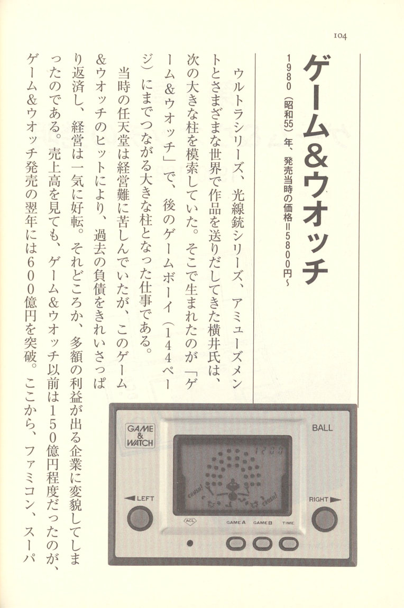
p.107 Game & Watch
1980 (Showa 55). Price at time of release: ¥5,800.
Having released products across a wide range of fields — the Ultra series, the Light Gun series, and the amusement products — Yokoi was searching for his next major pillar. What emerged from that search was "Game & Watch," a project that would become an enormous success, eventually leading all the way to the Game Boy (page 144).
At the time, Nintendo was struggling with financial difficulties, but the hit success of Game & Watch allowed the company to pay off all its debts in one clean sweep, and its fortunes turned around completely. More than that, Nintendo was transformed into a company generating enormous profits. Looking at the sales figures alone, revenue had been around 15 billion yen before Game & Watch, but in the year following its release, it surpassed 60 billion yen. From here, the Famicom, the Super 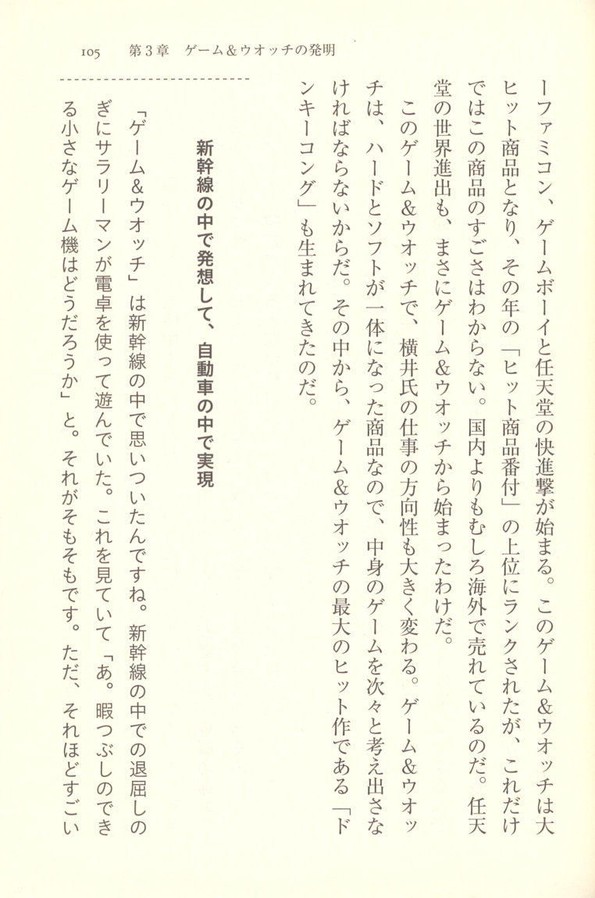
[IMAGE: Game & Watch Ball]
With Game & Watch, the direction of Yokoi's work also changed significantly. Because Game & Watch was a product in which hardware and software were integrated into one, he had to keep coming up with new games one after another. And from that process, Game & Watch's greatest hit of all — "Donkey Kong" — was born.
Conceived on the Bullet Train, Realized in a Car
"Game & Watch was something I came up with on the bullet train. To kill the boredom of riding the Shinkansen, a salaryman was playing around with a calculator. Watching him, I thought, 'Hmm, what about a small game machine that could be used to kill time?' That was the very beginning. But such an incredible
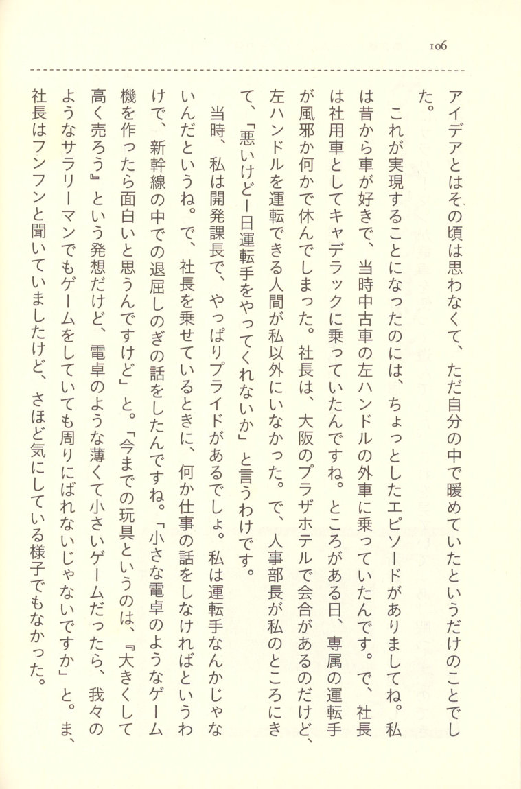
p.109 idea — I didn't think of it as anything that remarkable at the time. I was just quietly nurturing it inside myself. That's all it was.There's a little episode behind how this idea came to be realized. I've always loved cars, and back then I was driving a used left-hand-drive foreign car. Now, the company president rode around in a Cadillac as his company car. Then one day, his dedicated driver called in sick or something. The president had a meeting at the Plaza Hotel in Osaka, but there was no one besides me who could drive a left-hand-drive car. So the head of HR came to me and said, "Sorry to ask, but could you be his driver for the day?"
At the time, I was head of the development division, and I had my pride, you know. I wasn't some chauffeur. So while I was driving the president, I felt I had to bring up some work-related topic. That's when I told him about the idea I'd had about killing boredom on the bullet train. "I think it would be interesting to make a small game machine, something like a calculator," I said. "Up until now, the toy industry's approach has always been 'make it bigger and sell it for more,' but if it were a thin, small game like a calculator, even salarymen like us could play it without anyone around us noticing." Well, the president listened with the occasional "Mm-hmm," but he didn't seem particularly interested.
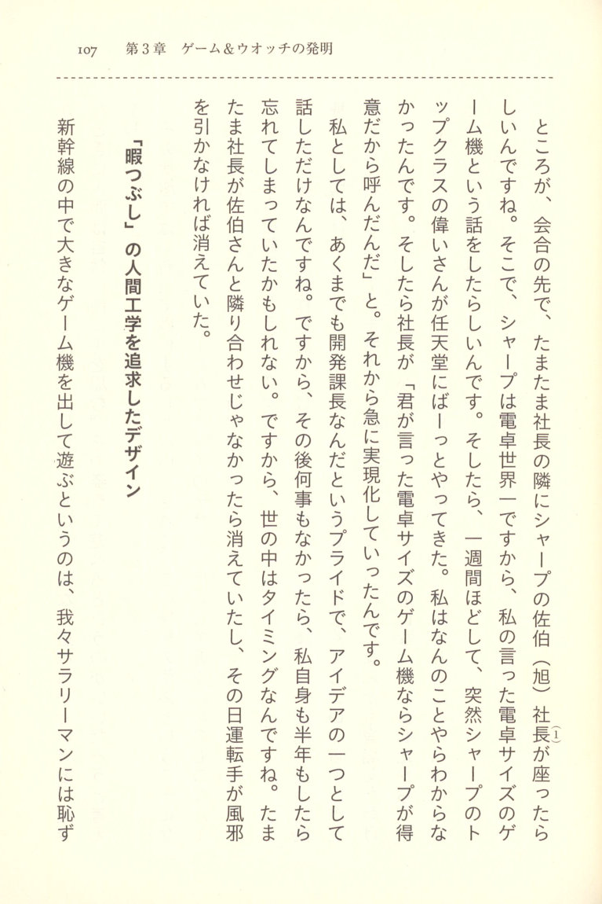
p.110 However, at the meeting, it so happened that Sharp's President Saeki (Akira) was seated right next to our president. So, since Sharp is the world leader in calculators, our president apparently told him about my idea for a calculator-sized game machine. Then, about a week later, a group of top-level Sharp executives suddenly descended on Nintendo. I had no idea what was going on. Then the president said to me, "You talked about a calculator-sized game machine — Sharp's specialty is exactly that sort of thing, so I invited them over." And from there, things rapidly moved toward realization.From my perspective, I had merely mentioned it as one idea, out of pride as the head of the development division, nothing more. So if nothing had come of it afterward, I myself would probably have forgotten all about it within half a year. That's why timing is everything in this world. If the president hadn't happened to be seated next to Mr. Saeki, the idea would have vanished. And if the driver hadn't caught a cold that day, it would have vanished just the same.
A Design Pursuing the Ergonomics of "Killing Time"
Pulling out a big game machine and playing with it on the bullet train — for us salarymen, that would be embarrass-
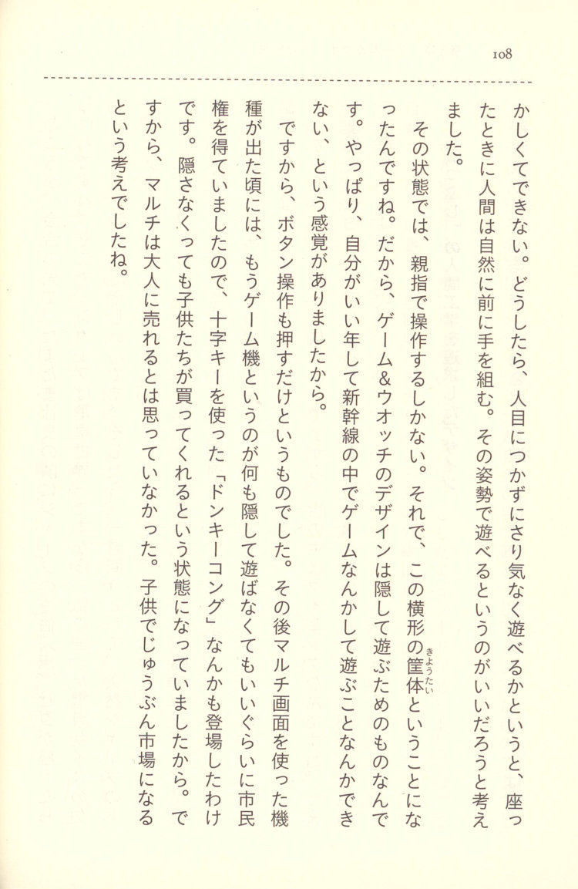
p.111 ing. So the question was, how could you play without attracting attention? When you sit down, you naturally clasp your hands in front of you. I figured it would be best if you could play in that posture.In that position, you can only operate it with your thumbs. And that's how we arrived at this horizontal body shape. So the Game & Watch design was fundamentally meant for playing while hiding it. After all, I personally felt there was no way I could be seen playing a game on the bullet train at my age.
That's also why the controls were just buttons you pressed — nothing more. Later, by the time the multi-screen models came out, game machines had gained enough social acceptance that you no longer needed to hide while playing, so that's when something like "Donkey Kong" with its cross-shaped directional pad appeared. Kids were buying them without anyone needing to hide anything anymore. So we never expected the multi-screen models to sell to adults. Our thinking was that the children's market alone would be more than sufficient.
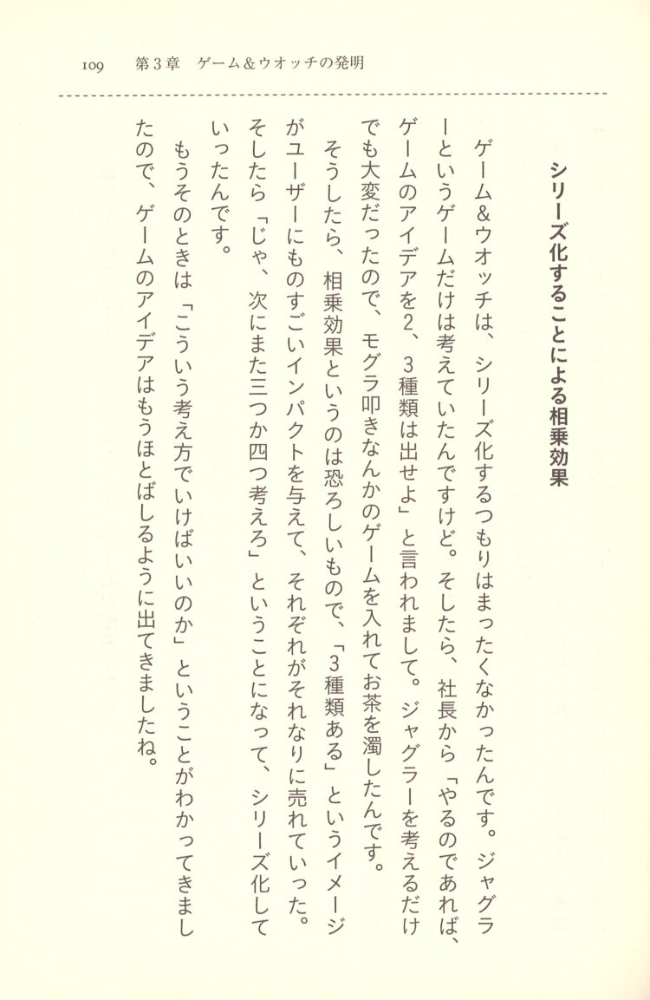
p.112 The Multiplier Effect of Turning It into a SeriesWe had absolutely no intention of turning Game & Watch into a series. The only game I had been thinking about was Juggler. But then the president said to me, "If you're going to do this, come up with at least two or three different game ideas." Just coming up with Juggler alone had been hard enough, so I threw in something like a whack-a-mole game just to round things out.
What happened next showed how powerful the multiplier effect can be — the image of "there are three different kinds" made a tremendous impact on users, and each one sold reasonably well in its own right. Then it became, "Well, come up with another three or four," and that's how it turned into a series.
By that point, we had come to understand the approach — "So this is how you think about it" — and game ideas just came pouring out of us.
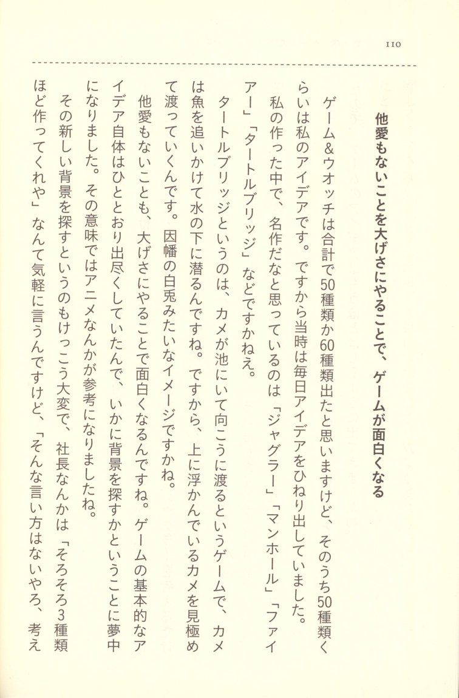
p.113 By Making a Big Deal Out of Simple Things, Games Become FunGame & Watch produced around fifty or sixty titles in total, I think. Of those, about fifty were my ideas. So back then I was wringing out new ideas every single day.
Among the ones I created, the titles I consider masterpieces are Juggler, Manhole, Fire, and Turtle Bridge.
Turtle Bridge is a game where turtles are in a pond and you have to cross to the other side. The turtles chase after fish and dive underwater. So you have to judge which turtles are still floating on the surface and cross over them. It's kind of like the image of the White Rabbit of Inaba.
Even trivial concepts can become fun when you make a big deal out of them. The basic game ideas themselves had pretty much all been exhausted, so I became obsessed with finding new settings and scenarios. In that sense, anime and the like became very useful references.
But searching for those new settings was quite a challenge in itself. The president would casually say things like, "How about you make us another three or so," but I'd think, "That's no way to put it — think about how hard
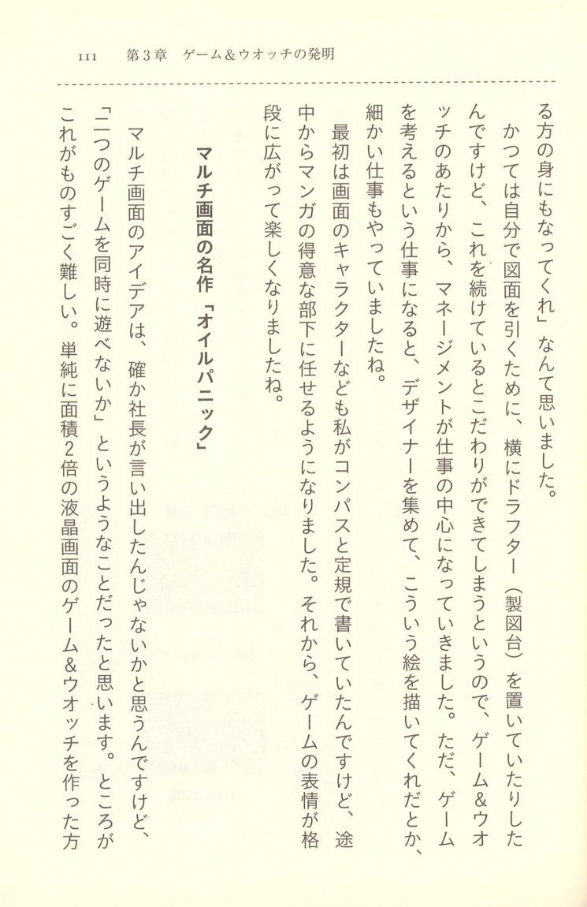
p.114 it is to come up with ideas!"There was a time when I used to draw the blueprints myself, and I had a drafting table set up right next to me. But doing that meant I got too caught up in the details, so starting around the Game & Watch era, management became the core of my work. Still, when it came to the job of conceiving games, I would gather designers and tell them to draw this or that, so I was still involved in the detailed work as well.
At first, I was drawing the on-screen characters and such myself using a compass and ruler, but partway through I started delegating that to a subordinate who was good at manga-style illustration. From that point on, the expressiveness of the games expanded dramatically and they became much more fun.
The Multi-Screen Masterpiece: Oil Panic
The idea for the multi-screen — I believe it was the president who first suggested it. It was something along the lines of, "Can't you make it so people can play two games at the same time?" But this turned out to be incredibly difficult. Simply making a Game & Watch with a liquid crystal screen twice the size would have been
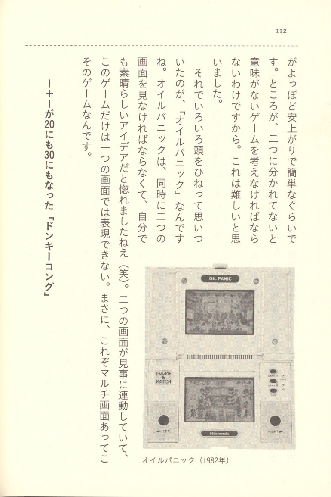
p.115 far cheaper and simpler. But the challenge was that we had to come up with games where having two separate screens was meaningful. I thought this was going to be really difficult.After racking my brain over all sorts of ideas, what I came up with was "Oil Panic." Oil Panic requires you to watch two screens simultaneously, and I have to say, even I was impressed by what a brilliant idea it was (laughs). The two screens work together beautifully, and this game simply cannot be expressed on a single screen. It is truly a game that could only exist because of the multi-screen format.
Donkey Kong: Where 1+1 Became 20 or Even 30
[IMAGE: Game & Watch Oil Panic (1982)]
p.116 But then the president told me, "One isn't enough. Make another type." So I was completely at a loss, and I talked to my subordinates about putting "Donkey Kong," which we had previously made for arcade use, into the multi-screen format. The thing is, though, Donkey Kong doesn't really require you to look at two screens simultaneously. So we just split the screen down the middle and made it that way. That's why, as a multi-screen game, Oil Panic is actually the superior one.
However, Donkey Kong used the cross-shaped directional pad, and the game content was excellent, so it became an explosive hit. It's still a masterpiece to this day. It must have sold seven or eight million units.
Donkey Kong, when you think about it, could have worked just fine on a single vertical screen. But what I myself hadn't realized was that splitting the screen into two produces an incredible synergistic effect. If you look at the top and bottom of Donkey Kong separately, it's nothing more than a simple game. But just by dividing it into two screens, it produces an effect not just double, but twenty or even thirty times greater. That's when I understood that this strange effect exists.
Something that wouldn't be all that interesting on a single vertical screen becomes incredibly fun just by splitting it in two. When you're looking at the top screen, the bottom screen somehow nags at the edge of your awareness. This is
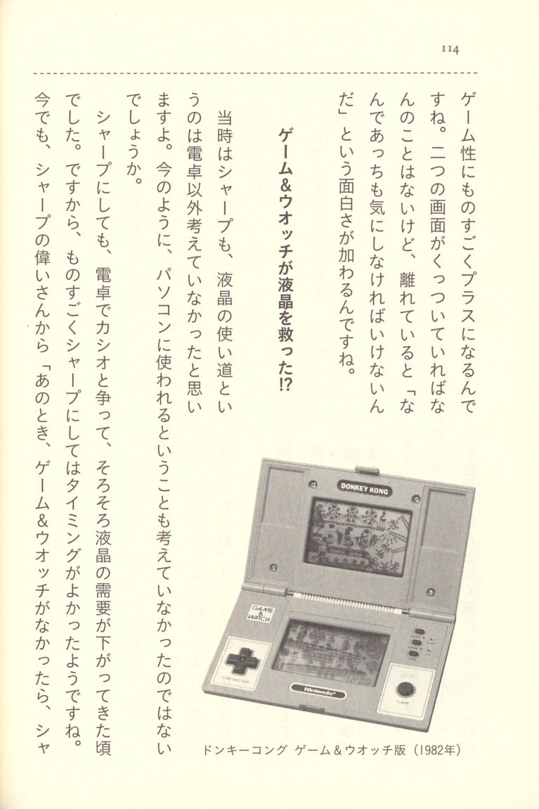
p.117 a huge plus for the gameplay. If the two screens were connected together, it wouldn't be anything special, but when they're separated, it adds this fun element of "why do I have to worry about that other screen too?"Game & Watch Saved the LCD!?
At the time, I think even Sharp hadn't considered any use for LCDs beyond calculators. They probably hadn't imagined that LCDs would be used in personal computers the way they are today.
For Sharp as well, they had been competing with Casio in calculators, and demand for LCDs was starting to decline around that time. So the timing turned out to be incredibly fortunate for Sharp. Even today, senior people at Sharp say to me, "Back then, if Game & Watch hadn't come along, Sharp
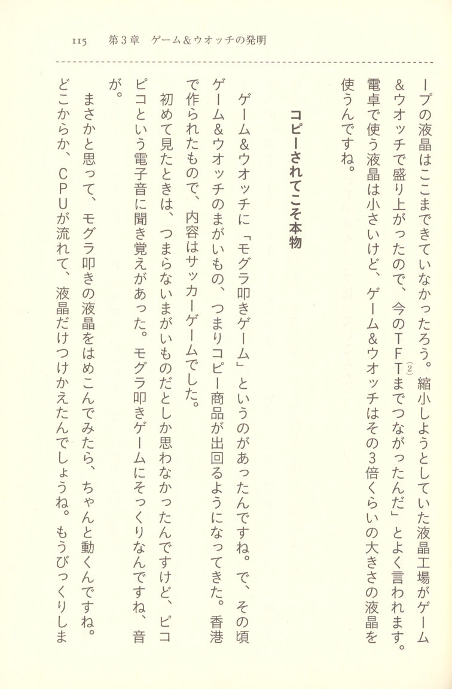
p.118 would never have survived." They often tell me, "The LCD factories we'd been trying to scale back got a huge boost from Game & Watch, and that's what connected us all the way to today's TFT displays." The LCDs used in calculators are small, but the ones used in Game & Watch are about three times that size.[IMAGE: Donkey Kong Game & Watch (1982)]
Copies Are the Sincerest Form of Flattery
There was a Game & Watch title called the "Whac-A-Mole Game." Around that time, Game & Watch imitations — that is, copy products — started appearing on the market. They were made in Hong Kong, and the content was a soccer game.
When I first saw it, I just thought it was another worthless knockoff. But there was something familiar about the electronic beeping sounds it made. The sounds were exactly like the Whac-A-Mole game.
I couldn't believe it, so I tried swapping in the LCD from the Whac-A-Mole game, and sure enough, it worked perfectly. Somehow the CPU had been sourced from somewhere, and they had just replaced the LCD. I was absolutely stunned.
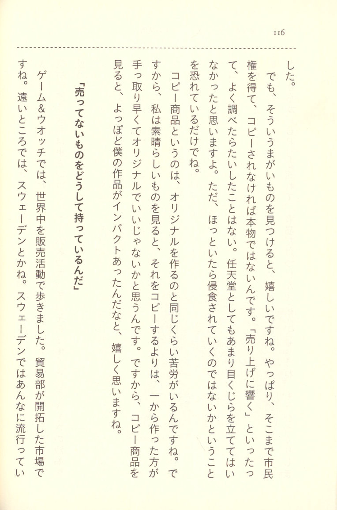
p.119 When you find a counterfeit like that, it actually makes you happy. After all, if it doesn't get copied, it's not the real deal. People might say "it hurts sales," but if you actually looked into it, the impact was negligible. I don't think Nintendo got too worked up about it either. The only concern was that if you just left it alone, it might gradually eat into your market.But you know, making a copy product actually takes just as much effort as creating the original. So when I see something impressive, I think it would be quicker and better to just build something original from scratch rather than copying it. That's why when I see a copy product, it actually makes me happy — it tells me my work must have had quite an impact.
"How Do You Have Something That Isn't Even For Sale?"
With Game & Watch, we traveled all over the world on sales campaigns. These were markets that the trade department had pioneered. We went as far as Sweden, for instance. Game & Watch was incredibly popular in Sweden —
p.120 — something I never would have expected.
While waiting for a plane at an airport in Sweden, Yokoi was playing with a prototype Game & Watch, and the person next to me leaned over and asked, "Where did you buy that?" I said, "It's not for sale yet." "How do you have something that isn't even for sale?" "Because I made it." That got a big laugh.
(1) Born in 1917. Second-generation president of Sharp. His skill in transforming Sharp from a mere small-town workshop and assembly plant into a comprehensive electronics manufacturer is still highly regarded today. He passed away in 2010.
(2) Thin-film transistor. Primarily used in liquid crystal displays, and still employed in the LCD screens of many PCs today.
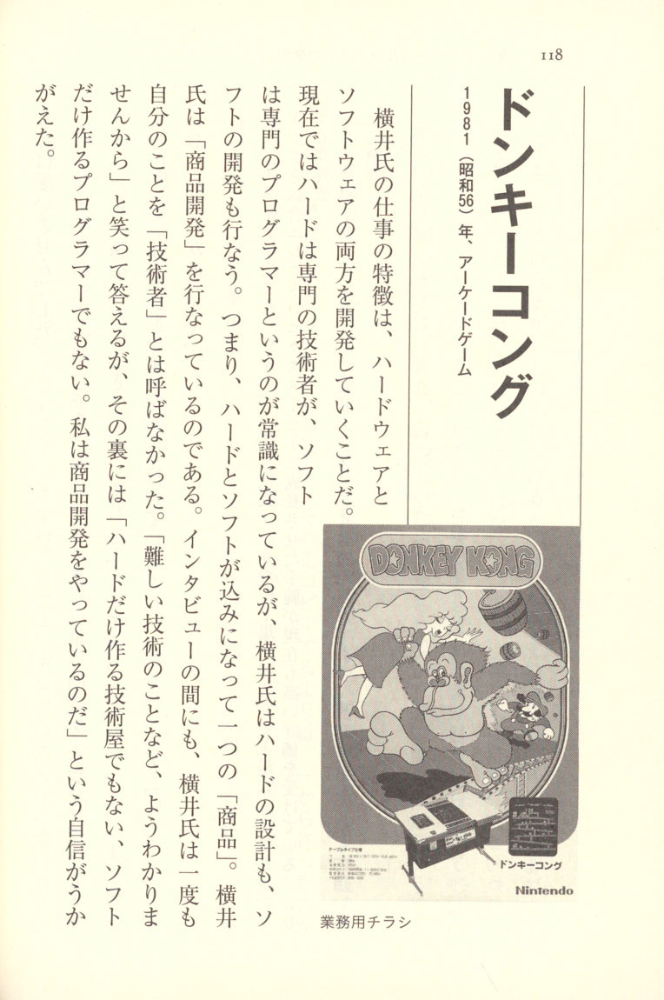
p.121 Donkey Kong
1981 (Showa 56) — Arcade Game
A hallmark of Yokoi's work is that he develops both hardware and software. Today it is taken for granted that hardware is handled by specialized engineers and software by specialized programmers, but Yokoi did both the hardware design and the software development. In other words, hardware and software come together as a single "product." Yokoi was engaged in "product development." Throughout the interview, Yokoi never once referred to himself as an "engineer." "I don't really understand all that difficult technical stuff," he says with a laugh, but behind those words one could sense his confidence: "I'm not just a hardware engineer, and I'm not just a software programmer. What I do is product development."
[IMAGE: Donkey Kong arcade flyer]
 p.122 That said, Yokoi is by no means a multi-talent who can do everything — he can handle hardware design as his specialty, but when it comes to programming, he says he's hopeless at it. This is what makes things so interesting. In other words, his philosophy was: "Have other people do what I can't do myself" — and he considers it his mission to come up with ideas for products. Technicians and programmers tend to get trapped in the dead ends of their own specializations, losing sight of what the product should ultimately be. His firmly held belief was that his job was to bring together what consumers want with what the engineers are striving for.
p.122 That said, Yokoi is by no means a multi-talent who can do everything — he can handle hardware design as his specialty, but when it comes to programming, he says he's hopeless at it. This is what makes things so interesting. In other words, his philosophy was: "Have other people do what I can't do myself" — and he considers it his mission to come up with ideas for products. Technicians and programmers tend to get trapped in the dead ends of their own specializations, losing sight of what the product should ultimately be. His firmly held belief was that his job was to bring together what consumers want with what the engineers are striving for.
In a word, this is the work of a product producer — but in reality, very few people can do this job properly. Yokoi himself said he was surprised to discover, only after leaving Nintendo, just how rare it was to find people doing the kind of work he had been doing.
The masterpiece video game Donkey Kong, born in 1981, was a work that truly showcased Yokoi's producer-like role. Donkey Kong came into being as the talented game designer Shigeru Miyamoto brought Yokoi's vision to life.
(1) As of June 2015, Senior Executive Director and Representative Director of Nintendo. Miyamoto created Donkey Kong under Yokoi's guidance, and subsequently 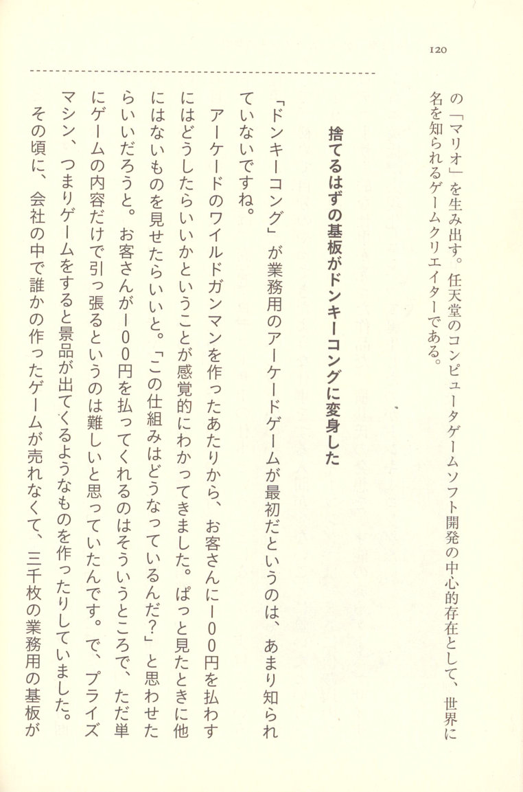
The Circuit Boards Meant to Be Discarded Were Transformed into Donkey Kong
It's not widely known that Donkey Kong started out as an arcade game for commercial use.
Around the time I was making the arcade game Wild Gunman, I began to develop an intuitive sense of what it takes to get a customer to put in 100 yen. You had to show them something they'd never seen before. You had to make them think, "How does this thing work?" That's what gets customers to pay 100 yen. I believed it was difficult to draw people in based on the game content alone. So I had been making prize machines — in other words, machines where you play a game and a prize comes out.
Around that time, a game that someone in the company had made wasn't selling, and three thousand commercial arcade boards were
p.124 left over. So the president came to me with a request: "Can't you use these boards to make a new game?" We were right at the very brink of having no choice but to throw away three thousand boards when I received this request. At the time I was fully occupied with Game & Watch, so I took it on with a very relaxed attitude — if we could sell even a few of those three thousand unsold boards, that would be nice; if we managed to sell a thousand, that would be more than enough of a contribution to the company. That's the carefree mindset I started with.
The Game Was Originally Popeye and Olive
At the time, there was a fellow named Miyamoto who had been doing package design. I pulled this Miyamoto in, and together we began developing a concept: "Let's make a Popeye game for Game & Watch." Given the circumstances, we decided to put it on those unsold boards instead.
Pretty quickly, the skeleton of the game took shape: "Popeye on the bottom, Bluto on top, and
p.125 But it turned out we couldn't secure the Popeye license. So we had no choice but to change just the characters while keeping the game content as it was. That's how Mario, Donkey Kong, and Princess Peach came about.
Quite a bit later, a film company came to us claiming that we were infringing on the King Kong copyright. When they did, I told them this whole story — that originally we had set out to make a Popeye game.
The Mario character was created by Miyamoto. He thought about how to redesign Popeye and decided that since it was a construction site, the character should wear work clothes. Adding the mustache was Miyamoto's idea too. But at first, we simply called the character "ossan" — "old guy." When we sent the finished character design to Nintendo of America, the people there said he looked just like an employee named Mario who worked at their company. Before we knew it, the nickname "Mario" had stuck.
The Original Idea Was Olive the Sleepwalker
In the Popeye anime, there's an episode where Olive becomes a sleepwalker or something and walks through a construction site —
p.126 there was an episode like that. When the scaffolding disappeared and Olive was about to fall, another piece of scaffolding would swing out and catch her just in time — that left a really strong impression on me. So I figured you could do all sorts of things with a construction site setting, and that's why we went with placing Popeye in a construction site.
Once we decided on a construction site as the backdrop, Miyamoto proposed, "How about having barrels rolling down from above, and you have to dodge them?" The idea at that point was that when a barrel came rolling toward you, you'd climb a ladder to avoid it. Once the barrel passed, you'd climb back down and continue moving up the scaffolding.
But that alone would be incredibly frustrating, so I said, "Make it so you can jump over the barrels when they come rolling at you." That's what led to the idea of pressing a button to jump over them. At first, there was some anxiety about whether you could really jump over a rolling barrel just by pressing a button, but when we actually tried it, we found it worked surprisingly well, so we went with that idea.
The barrel concept came from Miyamoto, who said, "If it's something that rolls, barrels would work well, wouldn't they?" Then the question came up of whether barrels would actually be found at a construction site, and someone suggested oil drums instead. But I think part of the reason was probably that barrels are easier to draw when they're rolling, and
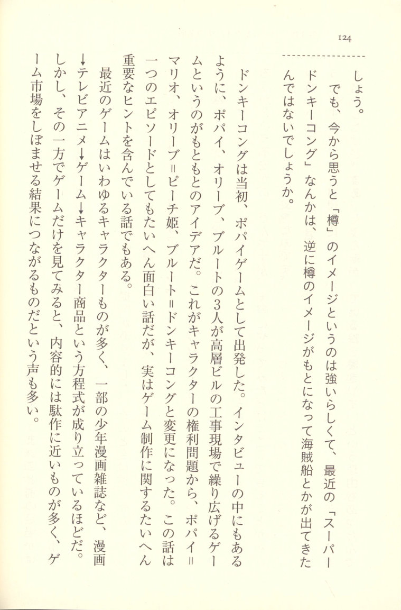
p.127 they also just look better as barrels.
But thinking about it now, the image of "barrels" is apparently quite strong — in fact, with the recent "Super Donkey Kong," I think it was the reverse: the barrel imagery became the basis for things like pirate ships appearing in the game.
Donkey Kong originally started out as a Popeye game. As mentioned in the interview, the original idea was a game featuring the three characters — Popeye, Olive, and Bluto — in a high-rise building construction site. Due to character licensing issues, this was changed so that Popeye became Mario, Olive became Princess Peach, and Bluto became Donkey Kong. This story is a very interesting episode in its own right, but it also contains a very important hint about game production.
Recent games are heavily dominated by so-called character-based titles, and in some boys' manga magazines, the pipeline from manga to TV anime to game to character merchandise has become firmly established. However, on the other hand, when you look at the games themselves, many of them are close to being duds in terms of content, and there are many voices saying that this is leading to a shrinking of the game market.
 p.128 Of course, using a famous character makes it a sales point for the product, and for fans of that character, it is undoubtedly a game they can be fully satisfied with. However, games that rely too heavily on characters tend to become impossible to evaluate as games in their own right. Yokoi has always said, "The life of a game is ultimately the fun of the game itself, like Go or shogi. Aren't most games today just changing things up superficially?" — and this way of thinking is reflected in this episode as well. Whether the character is Popeye or Donkey Kong, it has nothing to do with how fun the game itself is — that is his philosophy.
p.128 Of course, using a famous character makes it a sales point for the product, and for fans of that character, it is undoubtedly a game they can be fully satisfied with. However, games that rely too heavily on characters tend to become impossible to evaluate as games in their own right. Yokoi has always said, "The life of a game is ultimately the fun of the game itself, like Go or shogi. Aren't most games today just changing things up superficially?" — and this way of thinking is reflected in this episode as well. Whether the character is Popeye or Donkey Kong, it has nothing to do with how fun the game itself is — that is his philosophy.
And so, what is extremely interesting is the following point. Characters in games, he says, serve the function of an instruction manual.
Characters Serve the Role of How-to-Play Guides
For example, "Mario moves forward, enemies appear, and if he hits an obstacle he dies" — that
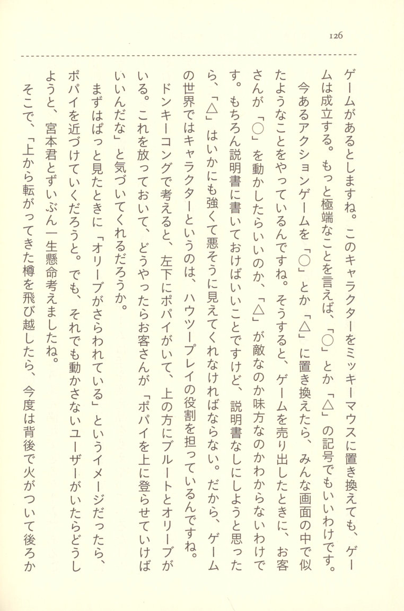
p.129 game exists. Even if you replace the character with Mickey Mouse, the game still works. To put it even more extremely, you could use symbols like "○" or "△" and it would be fine. If you replaced all the action games that exist today with "○" and "△," everything on screen would look similar.The problem then is that when you release the game, customers won't know whether they should be moving the "○," or whether the "△" is an enemy or an ally. Of course, you could just write it in the instruction manual, but if you wanted to do without a manual, the "△" would need to look unmistakably tough and villainous. That's why, in the world of games, characters serve the role of a how-to-play guide.
When you think about it in terms of Donkey Kong — Popeye is in the lower left, and Bluto and Olive are up above. If you just left it at that, how would you get the customer to realize, "I need to make Popeye climb upward"?
First, if the image at a glance is "Olive has been kidnapped," then the player would naturally try to move Popeye closer to her. But what if there were still users who wouldn't move him even then? Miyamoto and I thought long and hard about that.
So the idea was, "If you jump over a barrel rolling down from above, then fire ignites behind you, and from behind
p.130 the fire reverses direction and chases you," we decided. That way, you'd be forced to climb upward with something chasing you from behind. And so, we tried to explain how to play within the screen itself.
The demo screen showing Donkey Kong climbing upward didn't exist at first, you know. Originally it was Popeye, so the relationships between Olive, Bluto, and Popeye were immediately obvious to anyone watching. But in the case of Kong, the adversarial relationship wasn't clear at all, so we had to find some way to make Kong look like the villain. If we showed a scene of him grabbing a girl and climbing upward, then when the screen transitioned to the next scene and Kong was up at the top, the player would immediately understand, "Oh, I need to climb up." That was the thinking.
People Who Play Games Don't Read Manuals
Back when I was making Game & Watch, all I ever thought about was whether anyone could play the game without any explanation. People who are used to computers will read the manual before playing, but ordinary people are different.
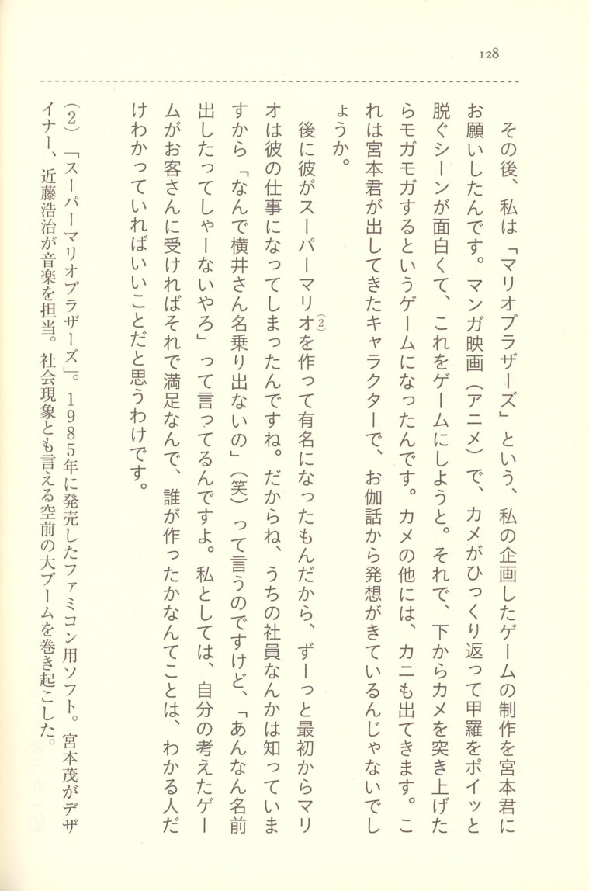
p.131 After that, I asked Miyamoto to handle production of a game I had planned called "Mario Bros." In animated films, there's a funny scene where a turtle flips upside down and pops its shell off. I thought we should turn that into a game. So the idea was that you'd hit a turtle from below and it would flail around helplessly. Besides turtles, crabs also appear. Those were a character Miyamoto came up with — I think the inspiration came from fairy tales.Later, when he made Super Mario and it became hugely famous, it ended up looking like Mario had been his project from the very beginning. So our employees, who know the real story, would say, "Why don't you speak up, Yokoi-san?" (Laughs) But I'd tell them, "There's no point in making a fuss about that." As far as I'm concerned, if the game I conceived is well received by customers, that's satisfaction enough. Who actually created it — that's something only those who know need to know, and I think that's perfectly fine.
(2) "Super Mario Bros." A Famicom game released in 1985. Shigeru Miyamoto was the designer and Koji Kondo handled the music. It sparked an unprecedented boom that could be called a social phenomenon.
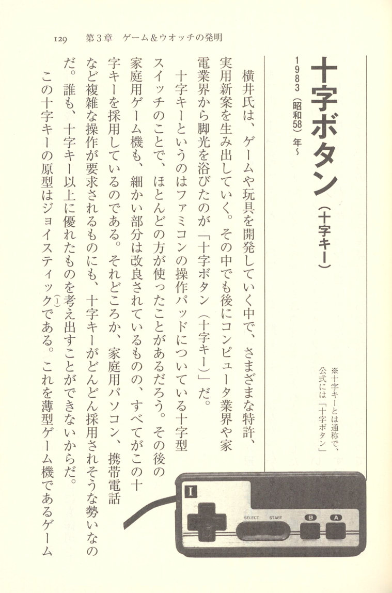
p.132 The D-Pad (Cross Key)
Note: "Cross Key" is the common name; the official name is "D-Pad" (Jūji Button).
1983 (Showa 58) —
Yokoi generated numerous patents and utility model registrations in the course of developing games and toys. Among these, the one that would later attract the most attention from the computer industry and the home electronics industry was the "D-Pad (Cross Key)."
The cross key is the cross-shaped switch on the Famicom's controller — something almost everyone has used at one point or another. Every home game console that followed adopted this cross key as well, with only minor refinements to the details. What's more, it was being adopted at a rapid pace even in devices requiring complex input, such as home PCs and mobile phones. The reason is simple: no one has been able to come up with anything better than the cross key.
The prototype for this cross key was a joystick. Making a thin game device like Game &  p.133 & Watch required a stick-type controller. The D-pad was born in order to incorporate one into the Game & Watch. Afterward, numerous advantages were discovered — it required only a single component, it was highly durable, and it was easy to operate — and it came to be adopted for the Famicom as well.
p.133 & Watch required a stick-type controller. The D-pad was born in order to incorporate one into the Game & Watch. Afterward, numerous advantages were discovered — it required only a single component, it was highly durable, and it was easy to operate — and it came to be adopted for the Famicom as well.
[IMAGE: Famicom controller]
You Can Tell Which Direction You're Pressing by the Feel of Your Fingers
"The first time we used the 'D-pad' was with the Donkey Kong Game & Watch. Up until then, the Game & Watch only had left and right push buttons.
When we tried to put a game like Donkey Kong into the Game & Watch, we went through a great deal of trial and error trying to figure out how to fit a joystick into such a thin device. At first, we made something like a breast-shaped controller, but you couldn't tell which direction you were pressing without looking down at your hands. As we kept experimenting with various approaches, the cross-shaped
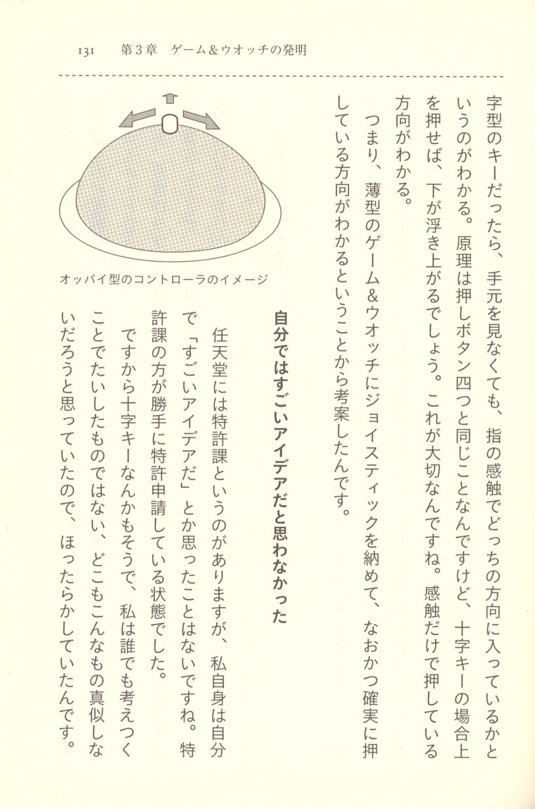
p.134 key turned out to be the answer. With a cross-shaped key, you can tell which direction you're pressing just by the feel of your fingers, without even looking at your hands. The principle is the same as having four push buttons, but with the D-pad, when you press up, the bottom rises. That's what's so important. You can tell which direction you're pressing by touch alone.In other words, the idea was conceived from the need to fit a joystick into the thin Game & Watch while still ensuring you could reliably tell which direction you were pressing.
I Didn't Think It Was Such a Great Idea Myself
Nintendo has a patent department, but I personally never thought, "This is a great idea!" or anything like that. The patent department went ahead and filed patent applications on their own — that was the situation.
So it was the same with the D-pad. I figured anyone could have come up with it, and it wasn't anything special. I assumed no one would bother copying something like this, so I just left it alone.
[IMAGE: Breast-type controller concept diagram]
p.135 The Hidden Design Philosophy Behind the Famicom
So the patent department said, "We'll file a defensive application just in case," and since writing up the paperwork was a hassle, I asked the person who had drawn the diagrams to handle it. Then they asked, "What should we put in the inventor field?" and I said, "Oh, just put your name in there" (laughs). That's how casual it was. The application was filed very loosely. Then later, all sorts of companies started copying it, and the patent department got chewed out pretty badly by the president: "Why did you handle things so sloppily?"
The D-pad was first used in the Game & Watch, and after that, the team that had been developing the Famicom came to us asking how they could bring costs down. So I proposed, "Just put this D-pad on the Famicom too." With the Game & Watch, the challenge had been "how thin can we make it" — with the Famicom, it was "how cheaply can we make it."
When the Game & Watch was in the spotlight and selling like crazy, the president was frequently asked to give lectures, and
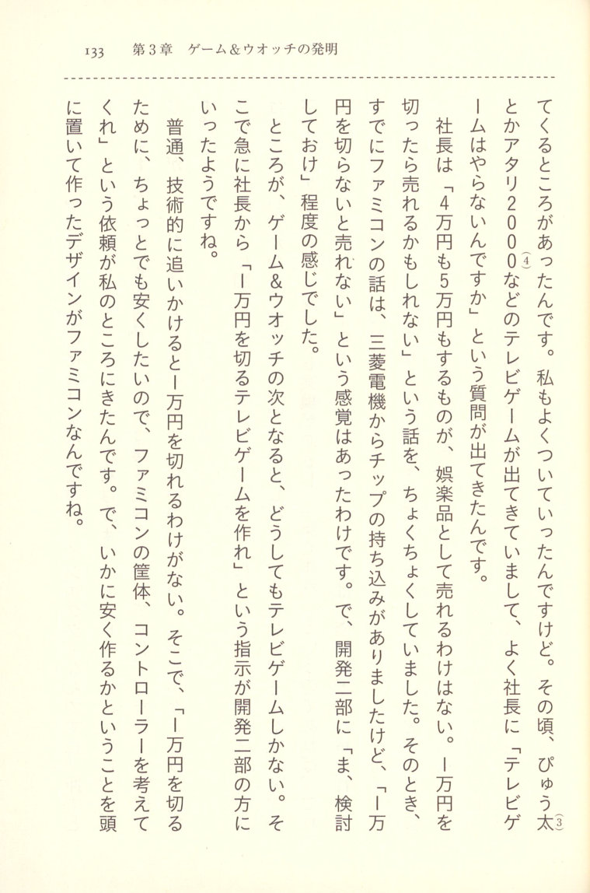
p.136 around that time, TV games like the Pyuta and the Atari 2600 were coming out, and people frequently asked the president, "Aren't you going to get into TV games?"The president would say, "There's no way something that costs 40,000 or 50,000 yen is going to sell as an entertainment product. If it could get below 10,000 yen, it might sell." He said this sort of thing quite often. At that point, the Famicom story was already in motion — Mitsubishi Electric had come to us with a chip proposal — but there was already a sense that "it won't sell unless it's under 10,000 yen." So Development Division 2 was told, "Well, look into it," in a fairly casual way.
But then, when it came to what would follow the Game & Watch, there was really nothing but TV games. So suddenly the president issued an order to Development Division 2: "Make a TV game that comes in under 10,000 yen."
Normally, if you pursue things from a purely technical standpoint, there's no way you can get it under 10,000 yen. So the request came to me: "We want to get it under 10,000 yen, and to make it even a little cheaper, we'd like you to design the Famicom's housing and controller." The design I created with the overriding goal of "how can we make this as cheaply as possible" — that became the Famicom.
p.137 There was just one thing where I insisted on adding my own touch — the ejector. You know, the thing where you press it and the cartridge pops out. That didn't exist on any TV game up to that point. Adding an ejector only increases the cost by about ten yen. I figured that just making it cheap for the sake of being cheap would be pretty uninspired — surely we could add at least one thing that nobody else had.
As for the controller, a joystick obviously wouldn't work. A joystick is a component that has to withstand tremendous force, so it has to be built tough. The D-pad, on the other hand, had a proven track record on the Game & Watch, and if the directive was "make it cheap," then this was the way to go. It wasn't so much that the D-pad was absolutely the best choice — it was more like, when you consider the cost, this is the only option. That was the feeling.
So the Famicom is by no means an outstanding piece of design, but when it comes to being sturdy and cheap, I have absolute confidence in it.
Where Did the Joystick Originate?
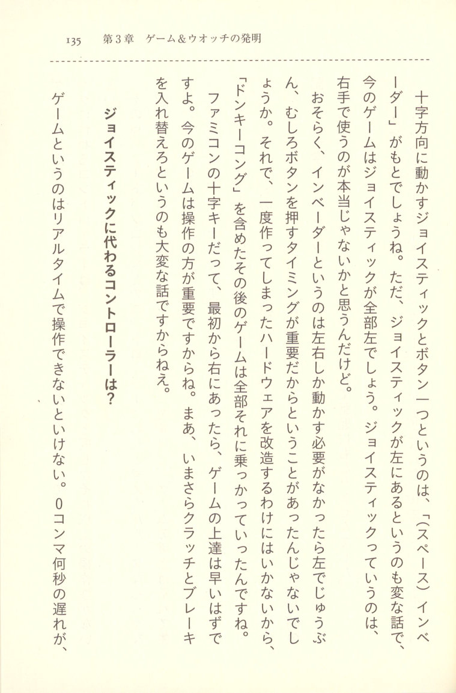
p.138 The idea of a joystick that moves in four directions plus a single button — that originated with Space Invaders, I'd say. But it's a strange thing when you think about it — having the joystick on the left. Every game today has the joystick on the left. But I think using your right hand for the joystick is really the more natural way.Most likely, with Invaders, since you only needed to move left and right, the left hand was perfectly sufficient — and in fact, the timing of pressing the fire button was what really mattered, so it made more sense to have that on the right. And once the hardware had been built that way, you couldn't very well redesign it, so every game that came after — including Donkey Kong — just followed that same layout.
Even with the Famicom's D-pad, if it had been on the right from the start, people would have gotten better at games faster. With today's games, the control input is what matters most. Well, saying we should swap the clutch and brake at this point — that would be quite an ordeal, so there's no helping it.
What Controller Could Replace the Joystick?
Games have to be operable in real time. A delay of zero-point-something seconds
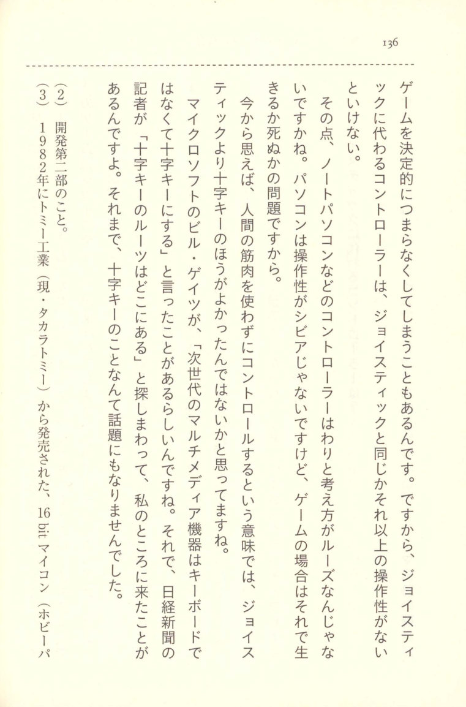
p.139 a controller to replace the joystick is, in the end, the same as a joystick. There's no operability beyond that. So a joystick is no good. Controllers for things like notebook PCs and personal computers are fairly loose in terms of operability, but in the case of games, that looseness can mean life or death. So the question becomes, can you control things without using your muscles? In that sense, I think the D-pad is better than a joystick. Bill Gates of Microsoft said that the next generation of multimedia devices would use keyboards, not joysticks. So a reporter from the Nikkei newspaper came to my place asking, "Where did the D-pad originate?" and I told them, "You'd have to say it comes from the cross key." Up until then, nobody had ever talked about the D-pad, and it never became a topic of conversation at all.(2) Refers to the second development division.
(3) Released in 1982 by Tomy Industries (now Takara Tomy), the 16-bit microcomputer (Hobby Pa
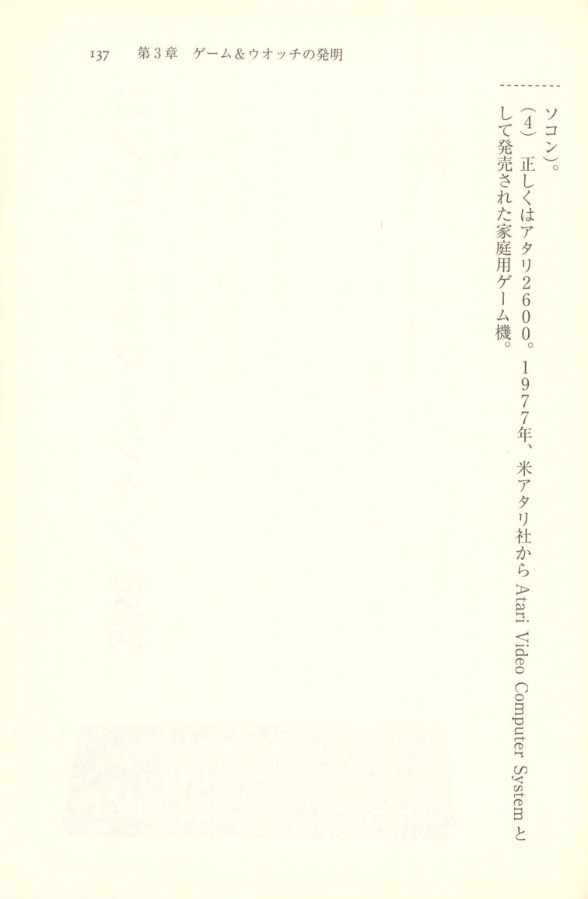
p.140 socon).(4) More precisely, the Atari 2600. A home video game console released in 1977 by Atari, Inc. of the United States as the Atari Video Computer System.
 p.141 Computer Mahjong Yakuman
p.141 Computer Mahjong Yakuman
1983 (Showa 58). Price at time of release: ¥16,800.
In the world of gaming, there is a genre known as network games, which has enjoyed enormous popularity in America for close to twenty years. Especially since the spread of the internet, new network games have been appearing one after another around the world. Moreover, devices such as the Nintendo DS and PlayStation Portable (PSP) now routinely offer the ability to compete against opponents using wireless connectivity.
Network games use the communication functions of personal computers and other devices to allow players in distant locations to compete against one another. From traditional games like chess to car racing, fighter jet battles, shooting games, role-playing games, and many more — all manner of games have become playable as network games. In Japan, full-scale 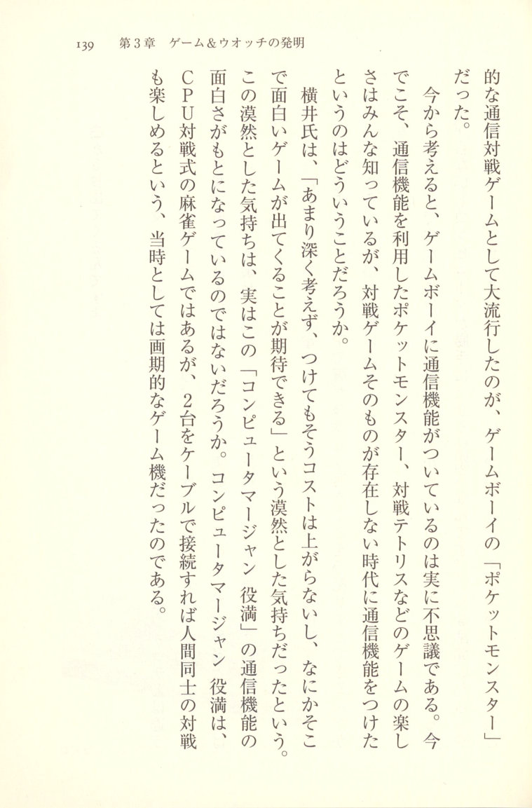
[IMAGE: Computer Mahjong Yakuman]
Looking back now, it is truly remarkable that the Game Boy came equipped with a communication function. Today, of course, everyone knows the fun of games like Pocket Monsters and head-to-head Tetris that make use of communication features. But to have included a communication function in an era when head-to-head games themselves didn't even exist — what could have been the thinking behind that?
Yokoi said that his feeling at the time was rather vague: "I didn't think too deeply about it. Adding it wouldn't raise the cost much, and I had a sense that somehow interesting games might come out of it."
This vague feeling was, in fact, rooted in the appeal of the communication function of this very Computer Mahjong Yakuman. Computer Mahjong Yakuman was a CPU-opponent mahjong game, but by connecting two units with a cable, players could enjoy head-to-head matches against each other — making it a groundbreaking game machine for its time.
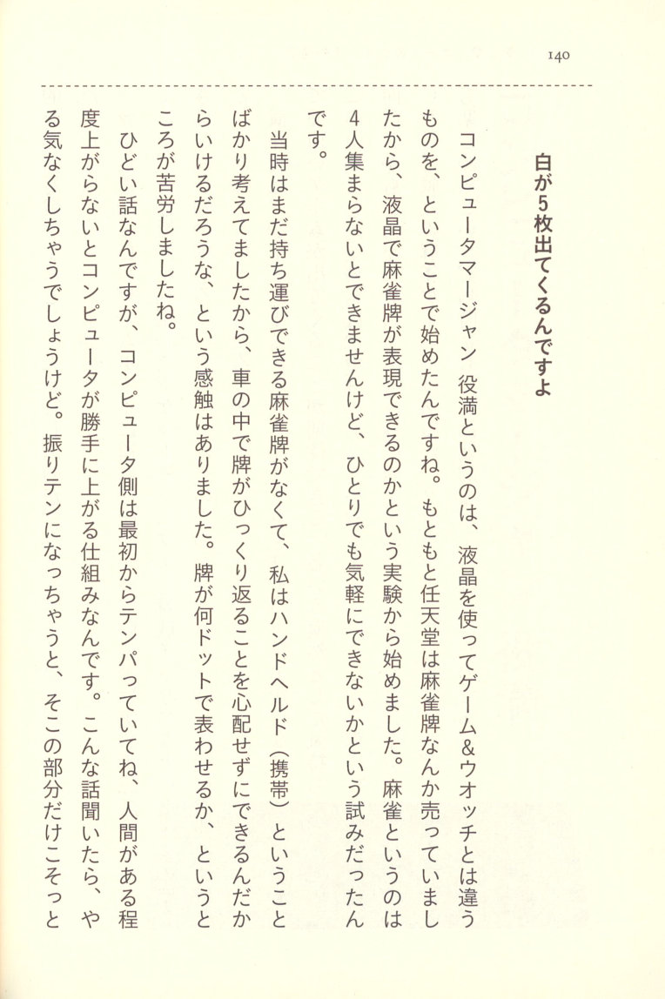
p.143 Five White Tiles Come OutComputer Mahjong Yakuman started from the idea of using LCD to create something different from Game & Watch. Nintendo had originally been selling mahjong tiles and such, so we began with an experiment to see whether mahjong tiles could be represented on an LCD screen. Mahjong is a game you can't play without gathering four people, so the idea was to see if we could make it something one person could enjoy casually on their own.
At the time, there were no portable mahjong sets you could carry around, and I was always thinking in terms of handheld, portable devices, so I had a sense that it would work — you could play without worrying about tiles flipping over inside a car. The challenge was figuring out how many dots it would take to represent a tile, and whether that would be enough. That part was really a struggle.
This is a terrible thing to admit, but the computer's hand was in tenpai from the very start. The system was set up so that if the human player didn't reach a certain level of progress, the computer would just win on its own. Hearing something like that would probably kill your motivation to play, right? And when it ended up in a furiten situation, that part would be quietly
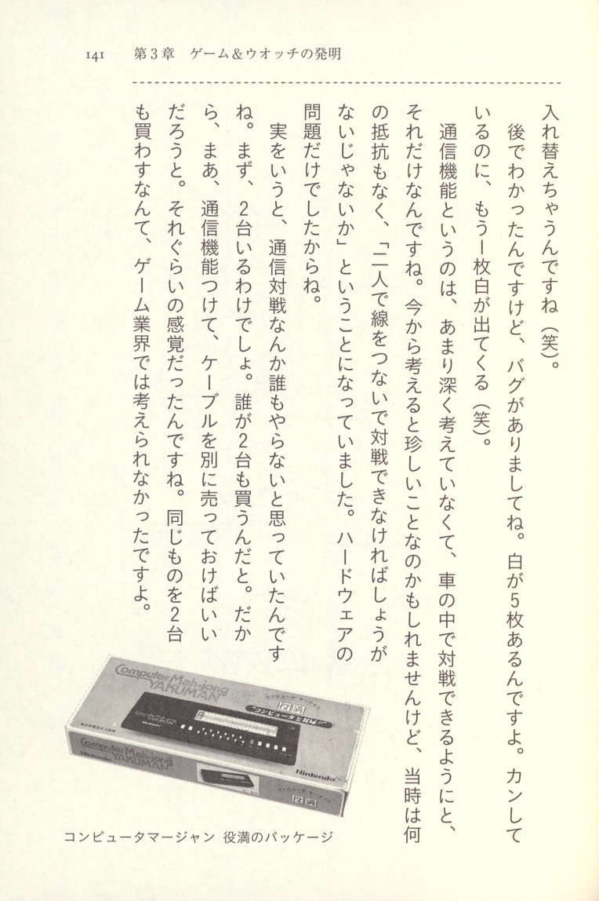
p.144 You'd just swap them out (laughs).I found out later, but there was a bug. There were five white dragon tiles. Even though you'd already called a kan, another white would come out (laughs).
As for the communication feature, we hadn't really thought about it too deeply. The idea was simply to make it possible to play against someone in a car. Looking back now, it might seem like a remarkable thing, but at the time there was no resistance to it at all — it was just, "If two people can't connect with a cable and play against each other, what's the point?" It was purely a hardware problem.
To tell the truth, I figured nobody would actually use the communication battle feature. First of all, you need two units, right? Who's going to buy two of the same thing? So the thinking was, well, just slap on a communication feature and sell the cable separately, and that should be good enough. That was about the extent of our thinking. Making someone buy two of the same thing — that was unheard of in the game industry.
[IMAGE: Computer Mahjong Yakuman packaging]
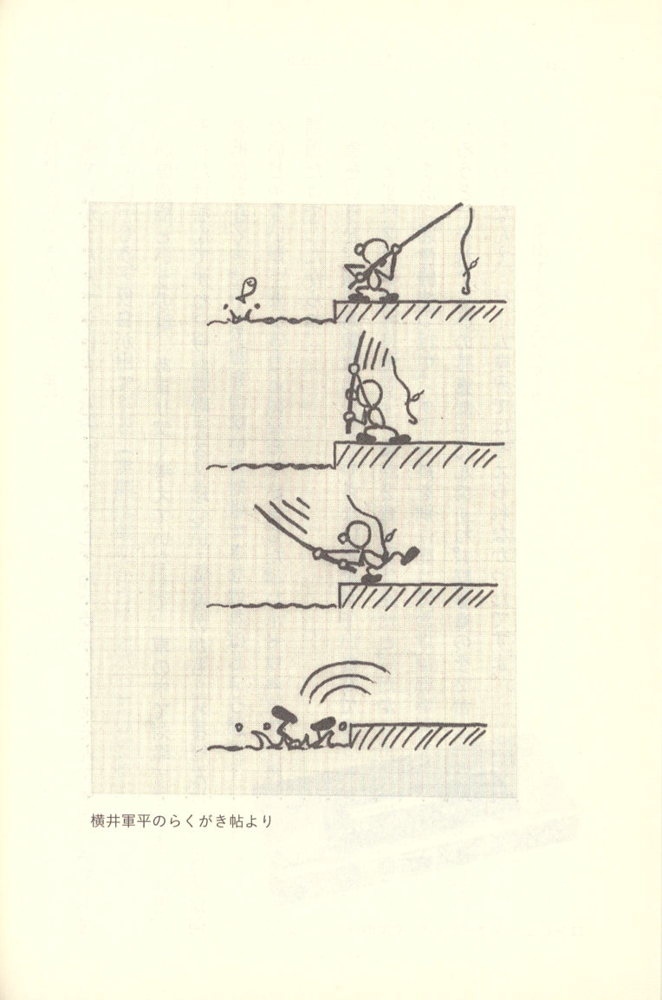
[IMAGE: Comic sketches of stick figure fishing]